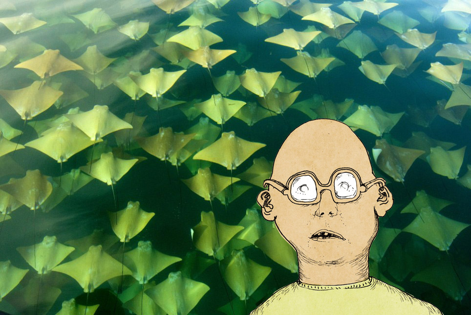

WHY NOW? A QUEST IN METAPHYSICS
An animated short film, covering the singularity hypothesis, the computable multiverse hypothesis and the simulation argument. Based on a talk by Jaan Tallin at the 2012 Singularity Summit.
You can view the original talk here.
